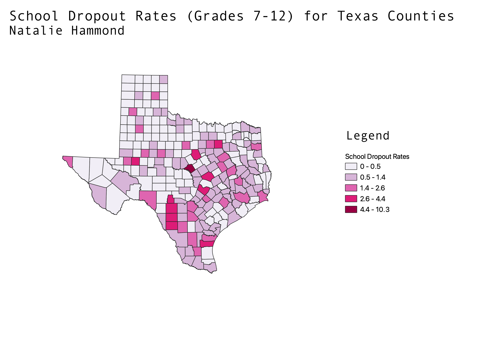

I made this map of Texas with data from 2022. My county shapefile is from a Texas government website, and my school dropout data is from the Texas Education Agency. My data shows the school dropout rates in grades 7-12 in ratio form. The dropout rate is defined by the Texas Education Agency as (the number of students that dropped out in a school year / number of students enrolled in that year) * 100. My map shows higher dropout rates in some central Texas counties and Southern counties. I used natural breaks for my data.
